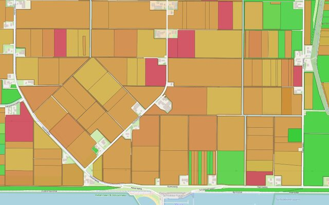
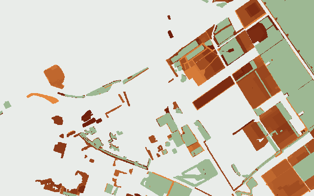
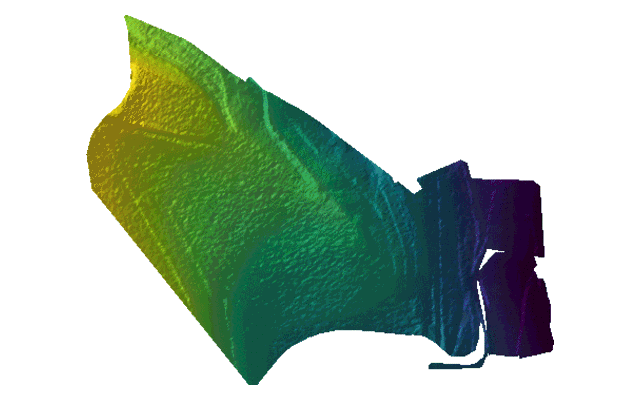
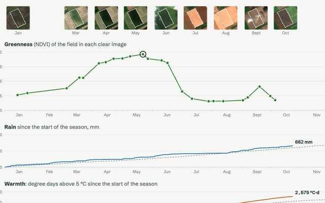
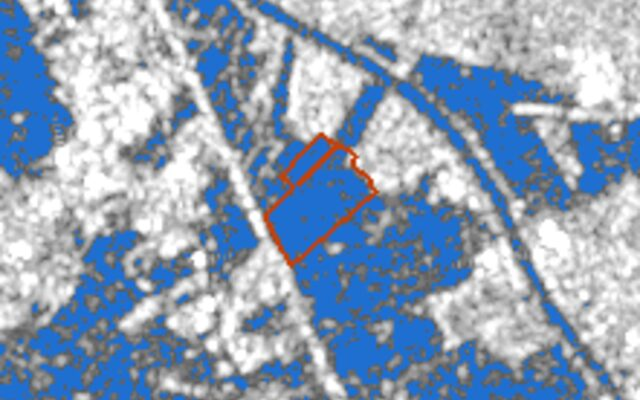
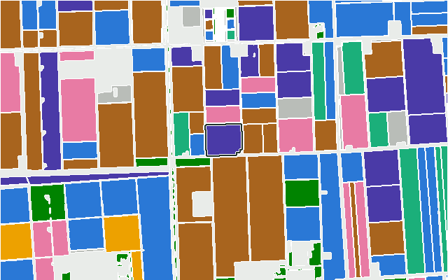
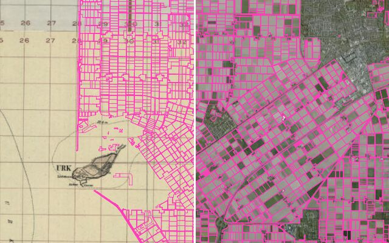

What you can build on open field boundaries
Small, working examples on top of the Fields of the World harmonized field data: agricultural field boundaries from many countries in one schema, published as GeoParquet, PMTiles and Cloud-Optimized GeoTIFF. Every demo runs in the browser and reads the data straight from the catalog.
-

Map of all field data (fiboa.org/map)
All 159 million field boundaries of the harmonized field data on one map, every collection at once, with a switch to colour them by crop.
-

Disappearing Dutch farmland
Eighteen years of the Dutch parcel register on one 2 m raster: how much land left farming, where, and what grew there last.
-

No field is flat
Click a field in the Netherlands, Belgium, France, Germany, Switzerland, Austria, the United States and more, and see its relief from that country's open 1 m height model, with the colours stretched over that one field.
-

Every field has a season
Click a field anywhere in the catalog and follow its year: how green it is in every clear Sentinel-2 image, and the rain and warmth it got compared with a normal year.
-

Fields under water
Click a field and see, in every Sentinel-1 radar image of a year, how much of it stood under water, next to the rain of each day. Radar sees through the clouds that come with a flood.
-

Crop rotation
Every edition of the Dutch, Flemish and Danish registers laid on top of each other: what grew on a field year after year, how varied the rotation is and how often a crop came back.
-

What was here before the fields
Today's fields over old maps and aerial photos, from the eighteenth century on, with a line to drag between then and now: polders where the sea was, heath and marsh turned into farmland, strips merged into blocks.